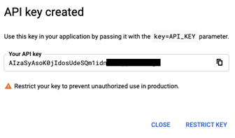

Chapter 24 Youtube API
You will need to install the following packages for this chapter (run the code):
# install.packages('pacman')
library(pacman)
p_load('httr', 'jsonlite', 'here',
'dplyr', 'ggplot2', 'tuber', 'tidyverse', 'purrr')24.1 Provided services/data
- What data/service is provided by the API?
The API is provided by Google, Youtube’s parent company.
There are different types of Youtube APIs that serve different purposes:
- YouTube Analytics API: retrieves your YouTube Analytics data.
- YouTube Data API v3: provides access to YouTube data, such as videos, playlists, and channels.
- YouTube oEmbed API: oEmbed is an elegant way to embed multimedia for a link.
- YouTube Reporting API: Schedules reporting jobs containing your YouTube Analytics data and downloads the resulting bulk data reports in the form of CSV files.
The google developer site provides sample requests and a summary of the possible metrics that the API can give you data on. You can actually run your API requests there. All the possible calls you can make are provided on the page: Captions, ChannelBanners, Channels, ChannelSection, Comments, CommentThreads, i18nLanguages, i18nRegrions, Members, MembershipLevels, Playlistitems, Playlists, Search, Subscriptions, Thumbnails, VideoAbuseReportReasons, VideoCategories, and Videos.
24.2 Prerequisites
- What are the prerequisites to access the API (authentication)?
An overview and guide is given on the Youtube Api website. First, you will need a Google account which you will use to log into the Google Cloud Platform. You will need to create a new project unless you already have one (here you can find more information). Then, you can search for the four Youtube APIs (YouTube Analytics API, YouTube Data API v3, YouTube oEmbed API, YouTube Reporting API) mentioned above and enable them (here you can find more information).
Then, continue to the “APIs and Services” Page from the sidebar and click on “Credentials.” Click on “+ Create Credentials” at the top of the page. You have three options here: API Key, OAuth client ID or Service account. An API Key will identify your project with a simple key to check quota and access but if you wish to use the YouTube API for your app, you should create an OAuth client ID which will request user consent so that your app can access the user’s data. This is also necessary when you want to use the tuber package. A Service account enables server to server, app-level authentication using robot accounts. We will continue with the option of creating an API Key, and later we provide an example of using the OAuth Client ID with the tuber package.
When you click on “API Key” in the “+Create Credentials” list, a screen will appear like below:

Your key is created! It is important to restrict the key!
24.3 Simple API call
- What does a simple API call look like?
You can access the API via your browser. The Youtube API website facilitate this where you have just to insert your parameters like part (what kind of information) or q (your search query). There is also an overview of that parameters on the Youtube Api website.
The base URL is https://www.googleapis.com/youtube/v3/.
With the following API call we tried to get the channel statistics from the MrBeast youtube channel. The channel statistics include information on the viewer count, subscriber count, whether there are hidden subscribers and on the video count.
https://youtube.googleapis.com/youtube/v3/channels?part=statistics&id=UCX6OQ3DkcsbYNE6H8uQQuVA&key=[YourAPIKey]
Here we are looking for channels, “part” is set on statistics and the id is the Youtube channel id. Inserted in the Browser we will get the following output.
{
"kind": "youtube#channelListResponse",
"etag": "ma9LJ5xRKmEdW36U5jKCcqE5JcU",
"pageInfo": {
"totalResults": 1,
"resultsPerPage": 5
},
"items": [
{
"kind": "youtube#channel",
"etag": "PAtSZnFS2dTafqi67SnYTrL6f2E",
"id": "UCX6OQ3DkcsbYNE6H8uQQuVA",
"statistics": {
"viewCount": "14370108796",
"subscriberCount": "88000000",
"hiddenSubscriberCount": false,
"videoCount": "718"
}
}
]
}24.4 API access in R
- How can we access the API from R (httr + other packages)?
To access the API from R we are using the same logic by building URL´s with our search request and using the GET() function of the httr package.
In this example we will compare the channel statistics of the the two biggest youtuber´s, PewDiePie and MrBeast.
library(httr)
library(jsonlite)
library(here)
library(dplyr)
library(ggplot2)
#save your API key in the object key
key <- Sys.getenv("Youtube_token")
#YouTube channels either have a channel id or a user id
MrBeastChannelID<-"UCX6OQ3DkcsbYNE6H8uQQuVA" #channel id
PewDiePieUserID <- "PewDiePie" #user id
#save the base URL in the object base
base<- "https://www.googleapis.com/youtube/v3/"
#get channel info with channel id for MrBeast channel
api_params <-
paste(paste0("key=", key),
paste0("id=", MrBeastChannelID),
"part=statistics",
sep = "&")
api_call <- paste0(base, "channels", "?", api_params)
api_result <- GET(api_call)
json_result <- httr::content(api_result, "text", encoding="UTF-8")
#format json into dataframe
channel.json <- fromJSON(json_result, flatten = T)
channel.MB <- as.data.frame(channel.json)
#example with a username for PewDiePie channel. For part you can also insert more at once to get additional information.
api_params2 <-
paste(paste0("key=", key),
paste0("forUsername=", PewDiePieUserID),
"part=snippet,contentDetails,statistics",
sep = "&")
api_call2 <- paste0(base, "channels", "?", api_params2)
api_result2 <- GET(api_call2)
json_result2 <- httr::content(api_result2, "text", encoding="UTF-8")
#format json into dataframe
channel.json2 <- fromJSON(json_result2, flatten = T)
channel.PDP <- as.data.frame(channel.json2)
#Now we want to compare the two channels by some indicators like views etc. For this we are subsetting the data and create new indicators like average views per video
MBchannel <- channel.MB %>% mutate(Channel = "MrBeast",Views= as.numeric(items.statistics.viewCount), Videos = as.numeric(items.statistics.videoCount),averViewsVideo = Views/Videos, Subscriber = as.numeric(items.statistics.subscriberCount)) %>%
select(Channel,Views,Videos, averViewsVideo, Subscriber)
PDPchannel <- channel.PDP %>% mutate(Channel = "PewDiePie",Views= as.numeric(items.statistics.viewCount), Videos = as.numeric(items.statistics.videoCount),averViewsVideo = Views/Videos, Subscriber = as.numeric(items.statistics.subscriberCount)) %>%
select(Channel,Views,Videos, averViewsVideo, Subscriber)
YTchannels <- rbind(MBchannel, PDPchannel)
YTchannels## Channel Views Videos averViewsVideo Subscriber
## 1 MrBeast 14672112047 719 20406275 8.98e+07
## 2 PewDiePie 28104820954 4454 6310018 1.11e+08On CRAN we found the “tuber” package. The package enables you to get the comments posted on YouTube videos, number of likes of a video, search for videos with specific content and much more. You can also scrape captions from a few videos. To be able to use the tuber package, not an API key but the authentication with OAuth is necessary. OAuth (Open Authorization) uses authorization tokens to prove an identity between consumers and service providers. You can get your client ID and secret on the Google Cloud Platform under Credentials.
Setting up the “Consent Screen”
First we had to configure the so-called OAuth consent screen, where we put “external” and then had to put an app name. For scopes we did not specify anything and just clicked save & continued. To be able to use the API you have to set your own google mail address that you use for the Google cloud.Get OAuth credentials
After setting up the consent screen you can go back and click “create credentials” and add a “OAuth client ID”. In older guides it is recommended to choose the category “others” which no longer exists. Here you have to choose “desktop application”. As a result you get an OAuth client id and secret. You can download this information stored in a JSON file. With theYt_oauth()function you can then authenticate yourself. This will forward us to logging into our google account. Allow the access to your google account. (like with google bigquery).
This page provides some example API calls you can make with the tuber package.
library(tuber) # youtube API
library(tidyverse) # all tidyverse packages
library(purrr) # package for iterating/extracting data
#save client id and secret in an object
client_id<-"put client ID"
client_secret<-"put client secret"
# use the youtube oauth
yt_oauth(app_id = client_id,
app_secret = client_secret,
token = '')
#Downloading playlist data
#first get playlist ID
go_psych_playlist_id <- stringr::str_split(string = "https://www.youtube.com/playlist?list=PLD4cyJhQaFwWZ838zZhWVr3RG_nETlICM",
pattern = "=",
n = 2,
simplify = TRUE)[ , 2]
go_psych_playlist_id
#use the tuber function get_playlist_items to collect the videos into a data frame
go_psych <- get_playlist_items(filter = c(playlist_id = "PLD4cyJhQaFwWZ838zZhWVr3RG_nETlICM"),
part = "contentDetails")
##now we have the video ids of all videos in that playlist
#extracting video id´s
go_psych_ids <- (go_psych$contentDetails.videoId)
#In the next step we will use the map_df command of the purrr package which needs a function as a parameter
#creating a function using the get_stats function of the tuber package
get_all_stats <- function(id) {
get_stats(video_id = id)
}
# Now we can store the stats information in a data frame with the map_df command which needs an object .x and a function .f
go_psych_AllStats <- map_df(.x = go_psych_ids, .f = get_all_stats)
#Overview of the statistics of all videos in the playlist
go_psych_AllStats## # A tibble: 18 × 5
## id viewCount likeCount favoriteCount commentCount
## <chr> <chr> <chr> <chr> <chr>
## 1 0SRmccgFIs8 4071451 147983 0 17428
## 2 _1GCjggflEU 1261825 57615 0 6112
## 3 aLOJg2VC76E 395087 15395 0 1395
## 4 6A2ml3CyLuU 293344 10085 0 1040
## 5 VxVOuCg-NG0 1042694 54188 0 14416
## 6 -ISz5tsB7Es 331800 14701 0 1263
## 7 6GcEhUYoW9E 1577397 68269 0 9820
## 8 bdNUL8yarR0 309420 15057 0 1408
## 9 E_nPrZU6PKc 188061 9214 0 461
## 10 E_nPrZU6PKc 188061 9214 0 461
## 11 E_nPrZU6PKc 188061 9214 0 461
## 12 wVTvcxEWClg 1839839 75695 0 25321
## 13 nHsS3Ta2MQo 394862 21102 0 1670
## 14 VkHErnASuvA 468368 33674 0 6049
## 15 FQ0IoPN8Yrs 1051800 63552 0 3695
## 16 NssIITHZ28Y 1271567 66974 0 9089
## 17 WWjpw51YWsE 106447 7038 0 643
## 18 Ti3cCGOfEEM 1333025 65439 0 5248Package information:
* CRAN - Package tuber
* here you can find all the functions that the tuber package provides
24.5 Social science examples
In the study “Identifying Toxicity Within YouTube Video Comment” (Obadimu (2019)), the researchers utilized the YouTube Data API to collect the comments from eight YouTube channels that were either pro- or anti NATO. To the comments, five types of toxicity scores were assigned to analyze hateful comments. With word clouds the researchers were able to quantify the count of words from comments. The final dataset contained 1,424 pro-NATO videos with 8,276 comments, and 3,461 anti-NATO videos with 46,464 comments.
The aim of the study “YouTube channels, uploads and views: A statistical analysis of the past 10 years” (Baertl (2018)) was to give an overview on how YouTube developed over the past 10 years in terms of consumption and production of videos. The study utilizes a random sample of channel and video data to answer the question. The data is retrieved with the YouTube API (did not specify which one) combined with a tool that generated random string searches to find a near-random sample of channels created between 01.01.2016 and 31.12.2016. Results are that channels, views and video uploads differ according to video genre. Furthermore, the analysis revealed that the majority of views are obtained by only a few channels. On average, older channels have a larger amount of viewers.
In the study “From ranking algorithms to ‘ranking cultures’: Investigating the modulation of visibility in YouTube search results” (Rieder (2018)), YouTube is conceptualized as an influential source of information that uses a socio-algorithmic process in order to place search recommendations in a hierarchy. This process of ranking is considered to be a construction of relevance and knowledge in a very large pool of information. Therefore, the search function serves as a curator of recommended content. The information that is being transmitted in this content can also impose certain perspectives on users which is why how the algorithm works is especially important when it comes to controversial issues. In order to better understand how the algorithms that determine search rankings on YouTube work, the authors use a scraping approach and the YouTube API v3 to study the ranking of certain sociocultural issues over time. Examples of the keywords that they use are ‘gamergate,’ ‘trump,’ ‘refugees’ and ‘syria.’ They find three general types of morphologies of rank change.